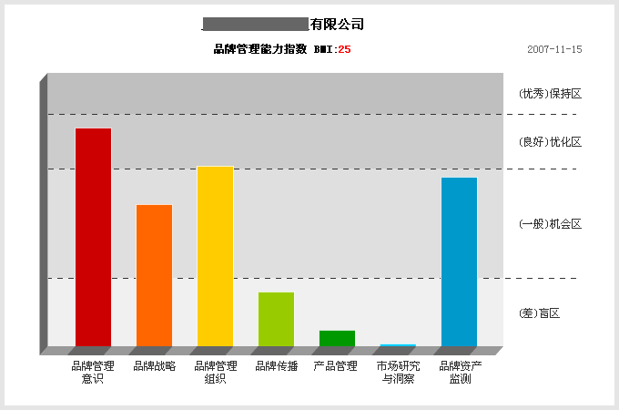

品牌管理能力的提升不是一蹴而就的，需要时间的累积。在这个积累的过程中，作为企业管理者需要有对自身客观的认知，品牌管理能力自测系统希望帮助企业能客观真实的了解品牌管理现状，有针对的提升品牌管理能力。
品牌管理能力自测系统是迈迪品牌管理基于全球市场，近千家存活超过10年的，成功企业的样本研究，样本涉及55个大行业，充分考虑到不同产业链、不同行业的差异性，归纳总结出能够考核企业品牌管理能力的评估系统
随着样本量积累，迈迪品牌管理研究院会阶段性的推出贴近企业现状，更具参照价值的“品牌长青指数”报告，通过多元化的指数报告，能扩展企业管理层的全局视野，为品牌管理能力的提升提供了有利武器。
自测系统主要模块有品牌管理意识、品牌战略、品牌管理组织、品牌传播、产品管理、市场研究和洞察、品牌资产监测等，他们综合起来就构成了企业完整的品牌管理体系，是全方位对品牌的审视。同时，每个评估指标都是独立视角，从不同层面解读企业的品牌管理掌控能力。而且，随着企业在品牌管理的基本意识方面不断提高，自测系统会不断完善和升级，从更丰富的视角来为企业的管理者提供能评估自身品牌管理现状。
无论您有没有创建过BrandQQ帐户，您随时随地都可以开始进行品牌管理能力自测。

首先，您必须创建一个BrandQQ的帐户，才能看到您的自测结果。品牌管理能力自测结果由总体评价，分模块评价以及整体状况图表(图一)等几个部分组成。

总体评价 部分从整体上对测试结果作出综合性的评价，同时，针对一些突出的问题给出具体的行动建议，并且依据您的行业特点给出更具体的评价。
分模块评价 从各个模块的角度，依据您的答题状况，给出了具体结论。并且，依据您的企业信息的完整性，分别提供概要视图和大纲视图。在模块评价中，您能看到所做过的题目以及您选择的答案，以备您回顾与参考。
整体状况图表则以最直观的方式，让您在最短的时间内了解到您的大致状况。图一标注了图表的细节信息。
BrandQQ的品牌管理能力自测系统充分考虑到这种情况，因而，在您完成测试后，您可以重新进行测试，以得到更贴近真实现状的测试结果。
不用担心，您可以中途停止测试，去忙您其他的紧急重要的事情。BrandQQ的品牌管理能力自测系统随时自动为您保存测试结果和测试的进度，您可以随时回来继续进行测试。
BrandQQ的品牌管理能力自测系统为您提供测试结果的分享功能，您可以将您的测试结果与您的上司，同事，朋友分享！